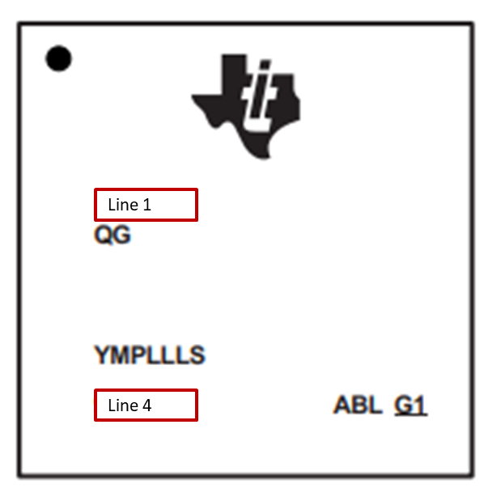

How to Determine Silicon Revision
===========
# Using Device Part Markings
Device part markings can be used to determine the device number as well as the silicon revision number.

* **Line 1** represents the device number (ex: IWR1443, IWR1843, or IWR6843)
* **Line 4** contains information relating the silicon revision (ES) number .
For your device number, reference the tables below to determine the version.
### For IWR1443
Line 4 reads: | Silicion Revision
--------------|-------------------
964 | ES1.0
964D | ES2.0
964FC | ES3.0
See [IWR1443 Device Errata](http://www.ti.com/lit/pdf/swrz074) for more details.
### For IWR1642
Line 4 reads: | Silicion Revision
--------------|-------------------
502 | ES1.0
502AC | ES2.0
See [IWR1642 Device Errata](http://www.ti.com/lit/pdf/swrz073) for more details.
### For IWR1843
Line 4 reads: | Silicion Revision
--------------|-------------------
502AC | ES1.0
See [IWR1843 Device Errata](http://www.ti.com/lit/pdf/swrz093) for more details.
### For IWR6843
Line 4 reads: | Silicion Revision
--------------|-------------------
60 GHZi | ES1.0
678A | ES2.0
See [IWR6843 Device Errata](http://www.ti.com/lit/pdf/swrz087) for more details.